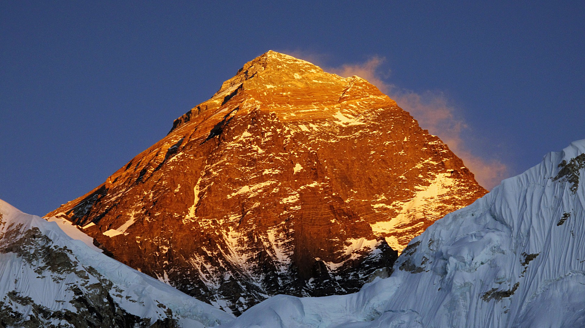

Mount Everest
Reach the highest point on earth or choose to live out your dream by standing at the foot of Mt. Everest (8,848 m). The Everest region in Nepal is more than just climbing and trekking, it is a life changing experience and some see it as a journey close to achieving Nirvana. Located in the north eastern province of Nepal, this region is in a world of its own with vast glaciers, icefalls, the highest mountains, deep valleys, precarious settlements, and hardy people challenging the harshest conditions thrown at them by nature in the thin air of high altitude.
Passing through legendary Sherpa villages, the trek is a mix of deeply cultural and spiritual experiences and physical challenges that test your strength and endurance. Buddhist lamas, monks and nuns led by Rinpoches (reincarnate at mas) serve the predominantly Sherpa communities from their gompas (monasteries). The journey to Everest or Everest Base Camp, begins with a dramatic flight from Kathmandu to Lukla, after which you hike up the Everest region to reach your destination in the Himalayas. However, for die-hard lovers of trekking, there is another switchback starting from Jiri through the mid-hills of Solu, an ethnically diverse section of the trek rich in flora.
Lifetime Experience
Taking a flight is a time-saver, while trekking from Jiri gives you the opportunity to follow in the footsteps of Tenzing and Hillary before their conquest of Everest. With more time to interact with the charming people along the route, you get to see the rich flora and fauna on the long trail. You get the added benefit of natural acclimatization as you go up and down the cliffs and valleys.

Things to do in while you are in Everest region
- Mountaineering
- Meet The People
- Mountain Viewing
- Trekking
- Bird Watching
- Sky Diving